Longren Hawaii Newsletter #00 - 23.05.2024 ------------------------------ Hello friends and family, Time just keeps trucking along, doesn't it? To continue recording my happenings, I'm going to revive this newsletter and divide it into sections based on where I am living at the time, making a sort of general story of my life. Before I start rambling on, if you want to be removed from the mailing list, as say you were only interested in the Antarctica parts, please just reply to this email letting me know. Now, back to our story. About 5 months ago, in January of this year, I moved to the US islands of Hawaiʻi for work. There is a prominent university on the islands called (you guessed it!) the University of Hawaii. There, I joined the Oceanography department as a sort of science IT technician. As a team of 6, we monitor and maintain a specific instrument on research ships. 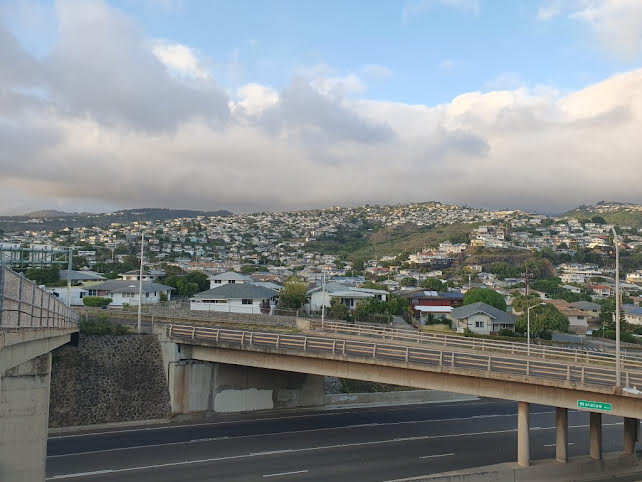 The area of Honolulu, Hawaii where I live. To get all the nitty-gritty background info out of the way before the pretty pictures, I want to show you what that instrument is; let's talk about sonar! When submarines or bats send out audio waves that, depending on how long they take to return, are able to show how far away an object is, that is sonar. This exact thing is done in the oceans to create maps of the ocean floor. But, instead of looking at the bottom of the ocean, the team I am working on now uses a kind of sonar that looks at the currents of the world's oceans. The instrument that does this is called an Acoustic Doppler Current Profiler and is able to observe the movement of water up to a kilometer below the water's surface. Now, what exactly am I doing with this ocean instrument thing? Well, mainly it's a computer job. Once setup, the instruments run pretty well on their own; each research ship has a marine science technician or two that go everywhere the ship goes and take care of all sorts of science devices that are onboard. My team oversees this one instrument that is installed in the hull of some 40+ ships around the world. Things like when the software breaks and needs fixing, or when the collected data is poor and needs troubleshooting, or when a ship's computer is getting old and is in need of an upgrade, that's what we do. And so, that is my job! In essence, it is IT support for ships that collect ocean current data, which helps inform us on the global climate and to generate weather prediction models. There is much to the oceans to still be learned. Let's now return to the month of January. I had just started this new job and was neck-deep in learning about oceanography and how to be a Linux computer admin. As well, I was getting settled to living in Honolulu, a place I had last lived when I was a young kid some 15 years ago. But, not a month into being back on the island and I was set to be leaving it again. Next stop: Alaska. 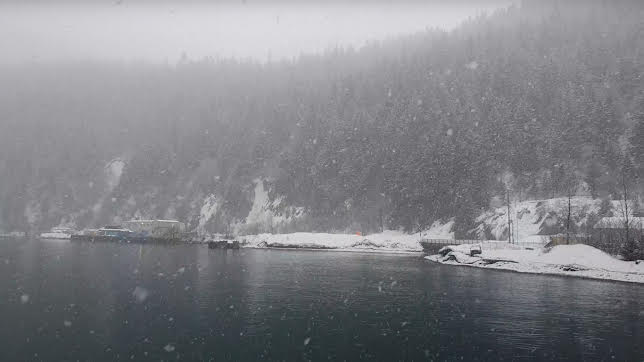 The weather arriving into Seward, Alaska. Of the ships that we have instruments on, a majority are research vessels that are operated by a university. It just so happened that the Sikuliaq, a Polar Class ship operated by the University of Alaska Fairbanks, was making a transit between Seward, Alaska and Seattle, Washington and was in need of an update to its data collection software. A few of my fellow team members and I set off to meet the ship. Before departing, we watched the American Football Super Bowl at a small sports bar in Seward, where we saw my hometown team the Kansas City Chiefs win the season. Back on board the ship, we set off the next day for our week-long cruise across the northern Pacific. 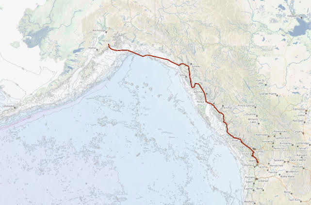 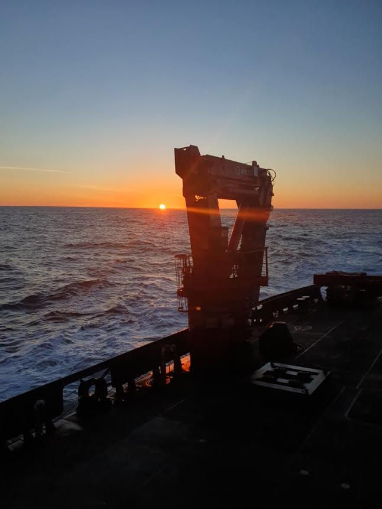 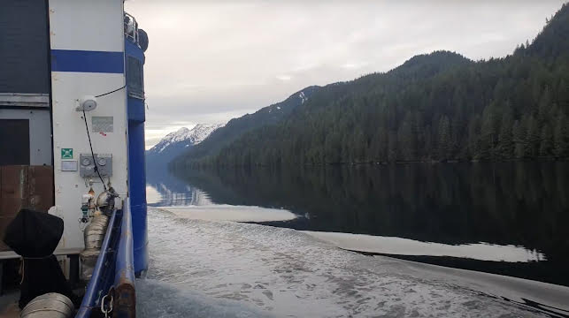 The route we took down the Inside Passage (top). The sunset on the open ocean (middle). A view of the coastline (bottom). Upon our arrival into Seattle, I had learned two things: the open ocean is beautiful and getting seasick is not. The Sikuliaq is made for breaking through ice in the polar circle. However, that comes at a cost; the ship rocks A LOT on the open ocean (I remember seeing tilts of up to 25° side-to-side). Apparently, ships can't be built for both thick ice and the open ocean. There is always a compromise depending on which hull type is chosen. 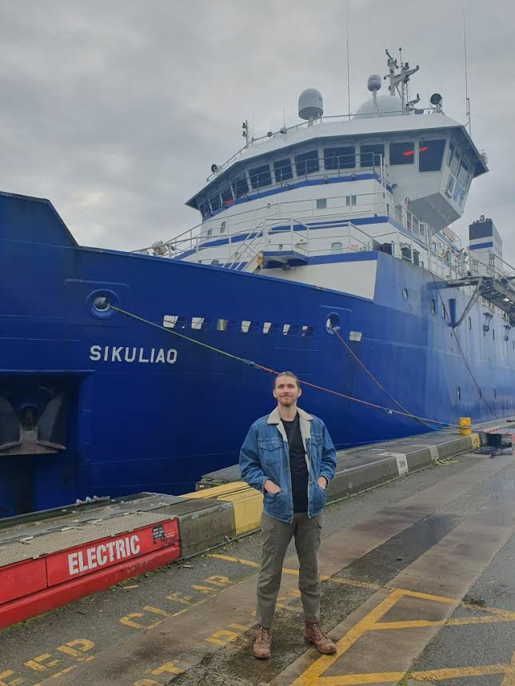 Made it to Washington state in one piece. The month of March saw my return to Hawaii, the release of the Dune sequel, the visit of my Dad and Brother to the island, and my first time traveling to Mexico for the wedding of two dear friends of mine. 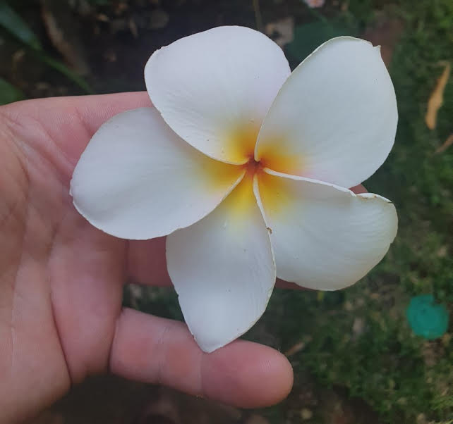 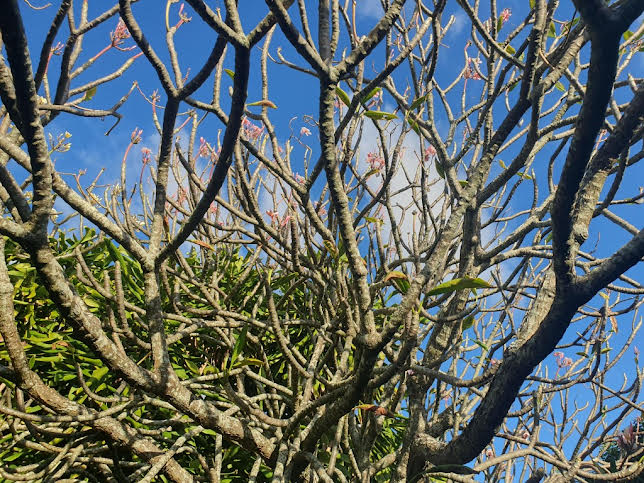 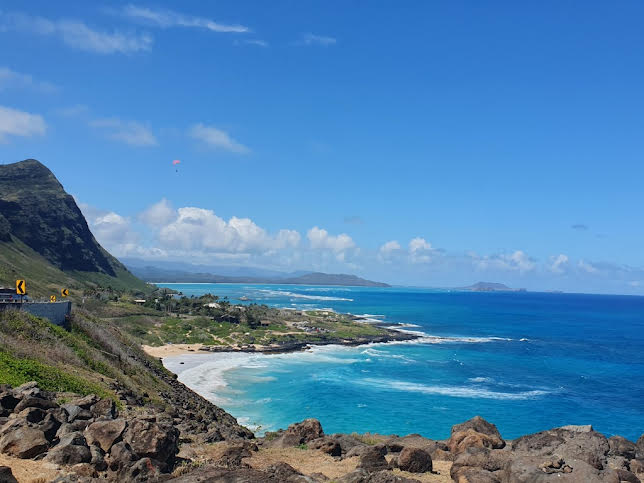 A common flower in Hawaii, the Plumeria (top). A bare Plumeria, or frangipani, tree (middle). The view from the east coast of Oahu (bottom). Then, April was much calmer for me. Not to mention a sprained ankle that kept me confined to the couch for most of the month. By the end of the month, it was all healed and I was off to see another ship, but on the other coast of the US this time. The research vessel Atlantic Explorer, operated by the Bermuda Institute of Ocean Sciences, was also in need of a visit and new software installed. A colleague of mine and I joined them on their 3 day transit between Bermuda and Morehead City, North Carolina. 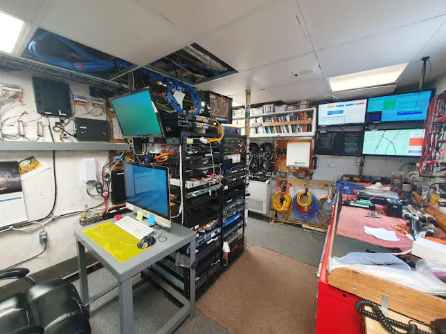 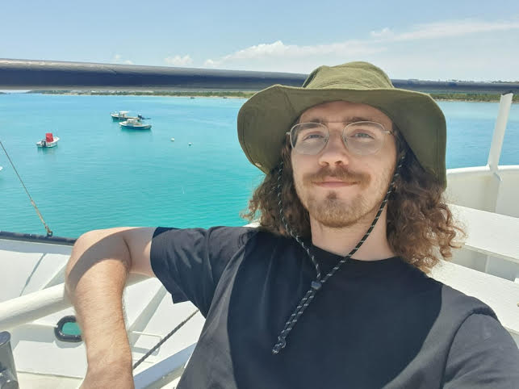 Between long stretches of time working in the server room on the ship (top), I tried to make it outside to enjoy the sun some (bottom). We then stopped into Miami to do the same on the Walton Smith, a ship operated by the University of Miami. This time, we weren't on the ship when it sailed, but while it was sitting in port. 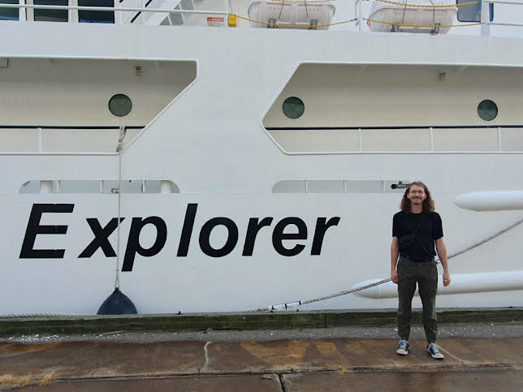 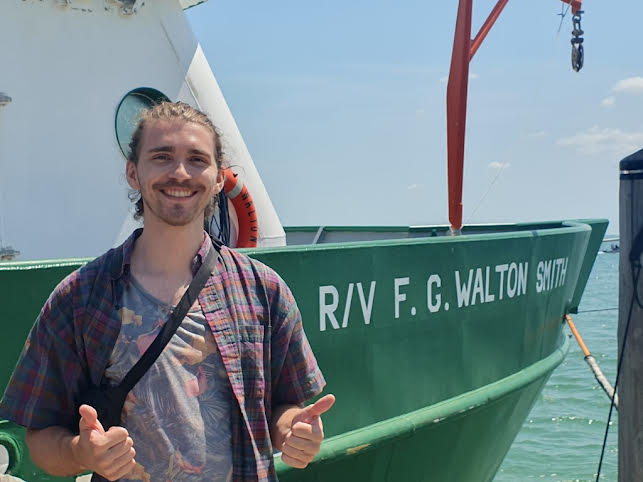 Taking photos before departing the Atlantic Explorer (top) and Walton Smith (bottom). Seeing these different research vessels has been a great time for me. Sadly though, it will be more short lived than I had first expected. Come July, I'll be moving once again. Stay tuned for the next letter where I'll tell you all about where I am heading to next. In the meantime, I wish you well. Cheers, Luke 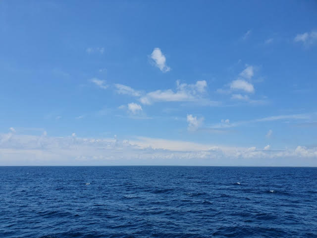 ------------------------------ ------------------------------ Previous newsletters can be found on my website. |